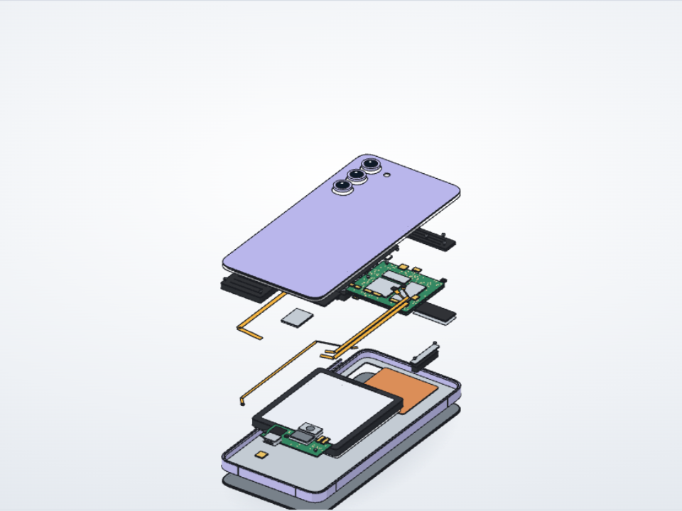
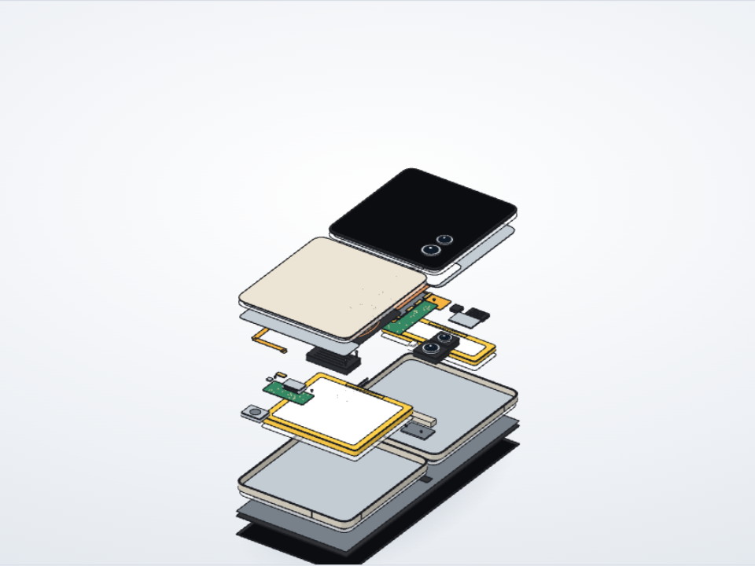
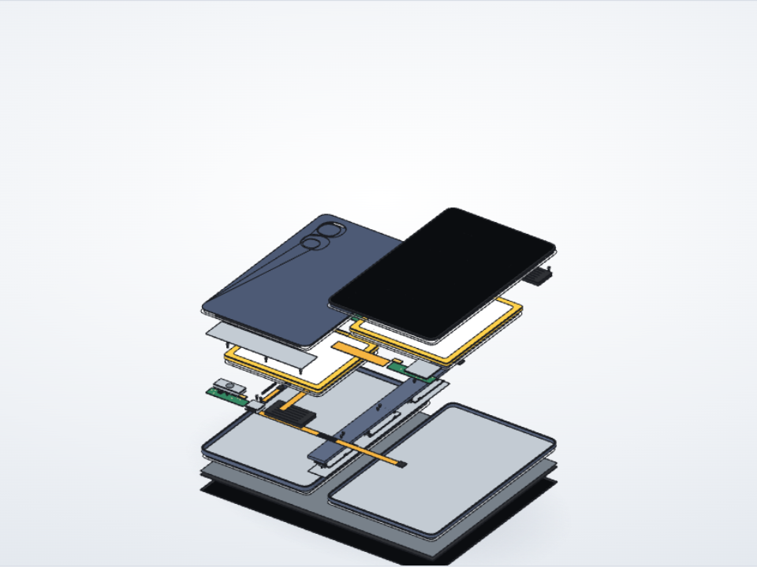
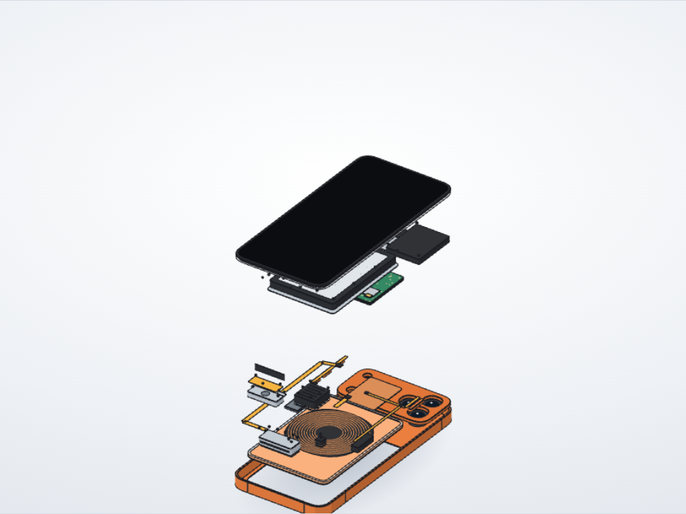
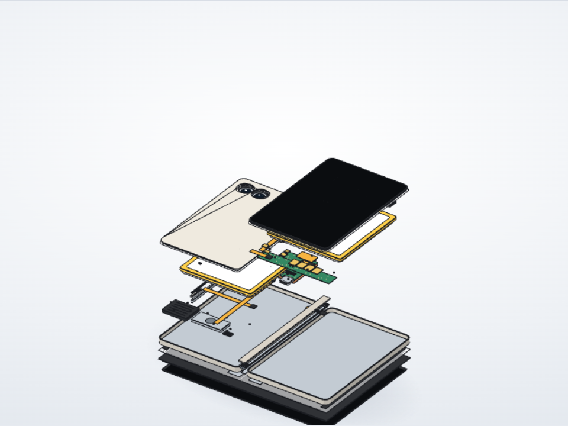

폰 모델명 하나로,
분해와 조립을 보여 주는 페이지
Unfold는 공개된 분해·수리 자료를 조사해서 폰의 부품과 조립 순서를 모델로 만들어요. 그리고 오프라인에서 열리는 HTML 한 장으로 그려요. 바를 끌면 폰이 흩어졌다가 실제 순서대로 다시 조립돼요.
예제 다섯 개





정직하게 표시해요
근거가 있는지
부품마다 자료 확인인지 추정인지 표시하고, 그 비율을 페이지 위에 보여 줘요. 내부 부품의 위치와 크기는 대부분 추정이에요.
무엇을 가져왔는지
출처에서는 치수, 개수, 순서, 고정 방식 같은 사실만 가져와요. 문장은 새로 쓰고, 사진과 도면은 쓰지 않아요. 출처는 페이지 안에 링크로 남겨요.
어떻게 검사했는지
사람의 검토 없이 끝까지 돌아가기 때문에, 데이터 검사와 화면 검사 두 관문을 통과해야만 결과가 나와요. 공개 전 검증 기록은 VALIDATION.md에 있어요.
설치
Claude Code에서 입력하세요.
/plugin marketplace add jaythealpha/unfold /plugin install unfold@unfold
그다음 "갤럭시 S25 울트라가 어떻게 조립되는지 보여줘"처럼 말하면 돼요. Node 18 이상이 필요하고, 화면 검사에는 Node 22와 Chrome이 필요해요.
틀린 곳을 알려 주세요
In English
Unfold is a Claude Code skill. Name a phone and Claude researches public teardown and repair data, writes an assembly model, checks it with two automatic gates and delivers one offline HTML page: drag the bar and the phone comes apart and goes back together in the real order. Every part is marked sourced or estimated. The example pages switch to English with the EN button. Install with /plugin marketplace add jaythealpha/unfold and /plugin install unfold@unfold.